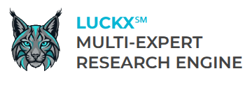

Synchronous 5-expert intelligence synthesis for board-level decisions, corporate strategy, and complex transactions.
The LUCKX Engine automatically decomposes and synthesizes your mandate across 5 strategic disciplines. To achieve boardroom-grade depth, simply anchor your query with: [Entity / Asset] + [Critical Friction or Risk] + [Strategic Target].
"What are the risks of investing in foreign renewable energy assets?"
"Cross-border infrastructure M&A in Latin America: Synthesize sovereign expropriation risk, bilateral investment treaty track records, and FX dividend repatriation caps for European institutional sponsors."
The LUCKX Engine automatically decomposes and synthesizes your mandate across 5 strategic disciplines. To achieve boardroom-grade depth, simply anchor your query with: [Entity / Asset] + [Critical Friction or Risk] + [Strategic Target].
"What are the risks of investing in foreign renewable energy assets?"
"Cross-border infrastructure M&A in Latin America: Synthesize sovereign expropriation risk, bilateral investment treaty track records, and FX dividend repatriation caps for European institutional sponsors."
Most enterprise AI regresses to polite consensus—averaging out critical tail risks. LUCKX executes autonomous research governed by a deterministic 5-layer interface contract.
Isolates the discrete commercial transaction, risk threshold, or statutory liability point. No open-ended questions.
Hardcodes governing jurisdictions, corporate entity tiers, balance-sheet limits, plant capacity, or capitalization limits.
Bans generic assertions. Mandates empirical proof: primary statutory texts, recent court rulings, audited financials, and lab assay logs.
Eliminates confirmation bias. Specifically commissions hostile perspectives—an aggressive tax inspector, cynical LP, or forensic auditor—to attack the thesis.
What you forbid determines analytical quality. Eliminates speculative EBITDA add-backs and corporate filler, delivering a structured decision artifact.